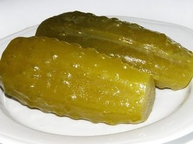

Шаг 1: Подготовим морковь и картофель для зимнего салата.
Картофель и морковь необходимо хорошенько промыть под водой, переложить в кастрюлю и залить холодной водой, чтобы жидкость полностью покрыла овощи. Ставим на плиту кастрюлю, подсаливаем немного воду, накрываем крышкой и доводим до кипения. Как только вода закипит, делаем огонь меньше и варим овощи до готовности. Для того, чтобы ее проверить, необходимо проколоть овощи вилкой или ножом. Если это делается легко, картофель и морковь внутри мягкие, то они готовы. Когда овощи сварились, вынимаем их из кастрюли и хорошенько остужаем. После остывания овощи очищаем от кожуры (морковь советую очищать вдоль, так легче будет отходить кожица). Нарезаем картофель и морковь кубиками. Сложить нарезанные овощи по отдельным тарелкам.
Шаг 2: Варим яйца для салата.
Куриные яйца предварительно промываем в проточной воде, после чего складываем их в посуду для варки, покрываем полностью водой и ставим на огонь. После того как вода закипит, добавляем в кастрюльку щепотку соли, чтобы скорлупа не растрескалась и содержимое яиц не вытекло. Убавляем огонь до минимального и варим яйца в течение 10 минут. Когда они будут готовы, берём посуду с яйцами, сливаем с них кипяток и ставим под проточную холодную воду (пусть хорошо протечёт вода, так быстрее остынут). Остывшие яйца очищаем от кожуры и нарезаем также кубиками, перекладываем в отдельную тарелку.
Шаг 3: Нарезаем вареную колбасу для салата «Зимний».
Первоначально, с изделия снимаем пленку. Далее колбасу нарезаем сначала кружочками, затем традиционным способом каждый кружочек на кубики. Перекладываем в отдельную тарелочку.
Шаг 4: Подготовим огурцы для зимнего салата.

Берём огурчики, какие у вас есть (соленые или малосольные) промываем под проточной водой, ставим на полотенце и даем им высохнуть. Можно также промокнуть их бумажными полотенцами. Далее нарезаем их кубиками. Перекладываем в тарелочку и даем стечь лишнему соку. Немного отжимаем руками и ставим в другую чистую тарелочку.
Шаг 5: Подготовим зелёный лук и горошек для салата «Зимний».
Берём пучок зелёного лука очищаем, моем под холодной водой и сушим на полотенце. Нарезаем мелкими колечками, немного присаливаем, для того чтобы ушла горечь. Баночку с горошком открываем, сливаем всю жидкость и промываем под водой и перекладываем в отдельную посуду.